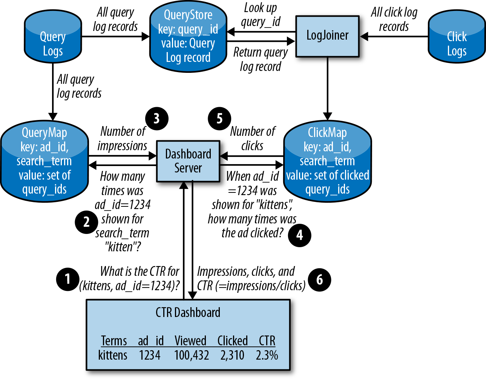
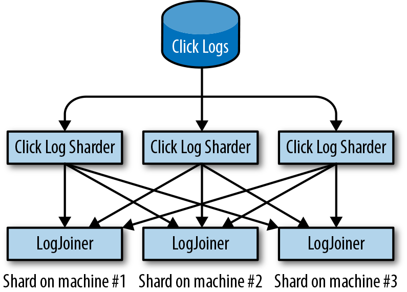
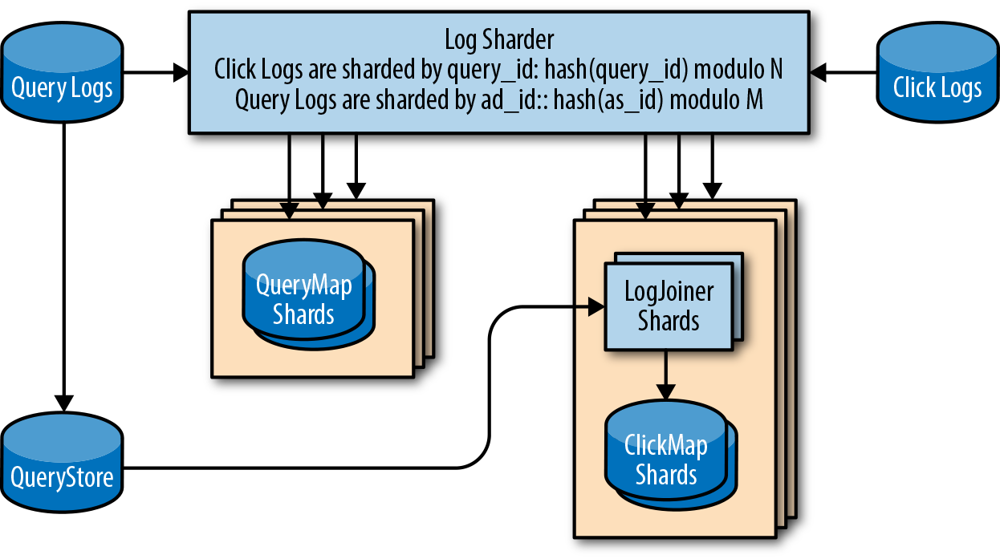
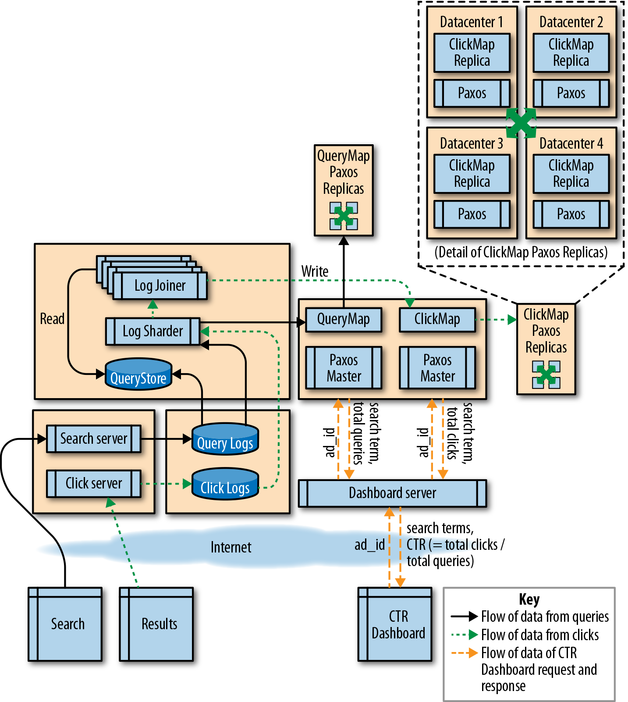

SRE 的职责横跨生产运维与产品工程，因此最适合统筹商业需求与运维成本。产品工程团队未必了解其所设计系统的维护成本，尤其是在该团队只负责构建更大生产生态中的一个组件时。
根据 Google 开发系统的经验，我们认为可靠性是任何生产系统最关键的特性。我们发现，在设计阶段推迟处理可靠性问题，无异于接受成本更高、功能更少的系统。通过迭代式设计和实现系统，我们可以得到稳健、可扩展且运维成本较低的设计。我们把这种方法称为非抽象大型系统设计（Non-Abstract Large System Design，NALSD）。
本章将展示 NALSD 方法：从问题陈述出发，收集需求，再不断迭代设计，使其逐步完善，直至得到可行的解决方案。 最终得到的系统能够抵御多种故障模式，既满足初始需求，也满足迭代过程中逐渐显现的附加要求。
NALSD 所描述的是 SRE 的一项关键技能：评估、设计和评价大型系统的能力。在实践中，NALSD 综合了容量规划、组件隔离和系统优雅降级等要素；这些要素对高可用生产系统至关重要。Google 希望 SRE 能从系统的基本白板图入手规划资源，全面考虑各种扩展方式和故障域，并把设计收敛为具体的资源方案。由于这些系统会随时间变化，SRE 分析和评价系统设计关键方面的能力极其重要。
所有系统最终都必须通过真实网络，在真实数据中心的真实计算机上运行。Google 从惨痛经验中认识到，分布式系统设计者必须培养并持续锻炼一种能力：在设计过程的多个阶段，把白板上的设计转化为具体的资源估算。如果缺少这种严谨性，人们很容易设计出无法真正落地的系统。
前期多做这一点工作，通常能减少临近上线时因某些未预见的物理约束而被迫修改系统设计的情况。
请注意，尽管这些练习会得出明确的结果（例如机器数量），但合理的推理过程和假设方式比任何最终数值都更重要。前期假设会显著影响计算结果，而 NALSD 并不要求假设尽善尽美。这项练习的价值，在于把许多不完美但合理的结果结合起来，从而更深入地理解设计。
Google AdWords 服务会在 Google 网页搜索中展示文字广告。点击率（click-through rate，CTR）指标可以让广告主了解广告的表现。CTR 是广告点击次数与展示次数之比。
这个 AdWords 示例旨在设计一个系统，能够衡量并报告每条 AdWords 广告的准确 CTR。计算 CTR 所需的数据记录在搜索系统和广告投放系统的日志中。这两类日志分别记录每次搜索查询展示了哪些广告，以及哪些广告被点击。
Google 采用迭代方法设计满足目标的系统。每次迭代都会提出一种候选设计，并考察其优缺点。分析结果要么成为下一次迭代的依据，要么表明该设计已经足够完善，可以推荐采用。
概括而言，NALSD 流程分为两个阶段，每个阶段要回答两到三个问题。
在基本设计阶段，我们尝试提出一种原则上可行的设计，并回答两个问题：
这种设计究竟能否实现？如果暂时不用担心 RAM、CPU、网络带宽等资源是否充足，我们会设计怎样的系统来满足需求？
对于任何这样的设计，我们都会问：“还能做得更好吗？”例如，能否让系统明显更快、更小或更高效？如果当前设计以 O(N) 时间解决问题，能否加快到 O(ln(N))？
在下一阶段，我们会尝试扩展基本设计，例如大幅提高某项需求指标。此时要回答三个问题：
在资金、硬件等条件的约束下，这种设计能否扩展？如果需要分布式设计，怎样的方案才能满足需求？
该设计能否优雅地应对故障？这个组件发生故障时会怎样？整个数据中心发生故障时，系统如何继续工作？
虽然我们大致按上述顺序讨论这些阶段和问题，但在实践中，思路会在不同问题和阶段之间反复切换。例如，在基本设计阶段，我们通常也会把未来增长和扩展问题放在心上。
然后，我们不断迭代。一种设计可能顺利通过大多数阶段，却在后期遇到难以解决的问题。出现这种情况时，我们会重新开始，修改或替换组件。最终设计正是这一连串曲折探索的结果。
了解这些概念之后，下面让我们完整走一遍 NALSD 的迭代过程。
每位广告主可以有多条广告。每条广告以 ad_id 为键，并关联一组由广告主选择的搜索词。
向广告主显示信息中心时，我们需要知道每条广告和每个搜索词的以下信息：
该搜索词触发这条广告展示了多少次
看到这条广告的用户点击了多少次
有了这些信息，就可以计算 CTR：点击次数除以展示次数。
我们知道广告主关心两件事：信息中心显示得快，数据足够新。因此，在迭代设计时，我们用 SLO 来表述需求（详见第 2 章）：
99.9% 的信息中心查询在 1 秒内完成。
在 99.9% 的时间里，所显示 CTR 数据的生成时间距当前不足 5 分钟。
这些 SLO 给出了我们应当能够持续达成的合理目标，同时也提供了错误预算（参见第 4 章，出自 Site Reliability Engineering）。每次设计迭代时，我们都会用错误预算衡量解决方案。
我们的目标是创建一个既能满足 SLO，又能支持数百万广告主在信息中心查看 CTR 的系统。对于事务速率，我们假设每秒有 500,000 次搜索查询和 10,000 次广告点击。
对于每次网页搜索查询，我们记录：
time查询发生的时间
query_id唯一的查询标识符（查询 ID）
search_term查询内容
ad_id这次搜索所展示的全部 AdWords 广告的广告 ID
这些信息共同构成查询日志。每当用户点击广告时，我们会在点击日志中记录点击时间、查询 ID 和广告 ID。
你可能会问，为什么不直接把 search_term 加入点击日志，以降低复杂度。在本例人为缩小的范围内，这样做或许可行。但在实践中，CTR 只是从这些日志中计算出的众多洞察之一。点击日志源自 URL，而 URL 本身有长度限制，因此单独保存查询日志是扩展性更好的方案。我们不打算通过给练习增加更多类似 CTR 的需求来证明这一点，而是接受这项假设并继续设计。
显示信息中心需要同时使用两类日志的数据。我们必须证明系统能够达到 SLO：在一秒内显示最新数据。要实现这个目标，系统在处理大量点击和查询时，计算 CTR 所需的时间必须保持恒定。
为了满足在一秒内显示信息中心的 SLO，我们必须能迅速查出已点击和已展示的 query_id 数量，并按 search_term 归入给定的 ad_id。我们可以从查询日志中提取已展示的 query_id 明细，并按 search_term 和 ad_id 划分。CTR 信息中心需要取得相关 ad_id 在查询日志和点击日志中的全部记录。
只要广告主不止寥寥几位，通过扫描查询日志和点击日志来生成信息中心就会非常低效。因此，我们的设计要求这台机器在接收日志时创建适当的数据结构，以便快速计算 CTR。在单台机器上，使用分别为 query_id 和 search_term 建立索引的 SQL 数据库，应该可以在一秒内返回答案。以 query_id 连接两类日志，再按 search_term 分组，就能报告每项搜索的 CTR。
我们需要计算解析所有这些日志要占用多少资源。为了确定扩展极限，需要先做一些假设。首先估算查询日志的大小：
time64 位整数，8 字节
query_id64 位整数，8 字节
ad_id三个 64 位整数，每个 8 字节
search_term最长 500 字节的长字符串
500～1,000 字节的信息，例如由哪台机器投放广告、搜索使用的语言，以及该搜索词返回了多少条结果
为了避免过早触及容量上限，我们采用激进的向上取整，把每条查询日志记为 2 KB。点击日志量应远小于查询日志量：平均 CTR 为 2%（10,000 次点击 / 500,000 次查询），所以点击日志的记录数是查询日志的 2%。请记住，我们特意选择了较大的数字，以说明这些原则能够扩展到任意规模的实现。这些估算看起来很大，正是设计使然。
最后，我们可以使用科学记数法，减少因单位不一致而造成的计算错误。24 小时内生成的查询日志量为：
(5 × 105 queries/sec) × (8.64 × 104 seconds/day) × (2 × 103 bytes) = 86.4 TB/day
点击数是查询数的 2%，而且数据库索引会产生一定的合理开销，因此可以把每天 86.4 TB 向上取整为 100 TB，作为存储一天日志数据所需的空间。
面对约 100 TB 的总存储需求，我们必须做出一些新的假设。这种设计还能在单台机器上运行吗？虽然可以给一台机器连接总容量 100 TB 的磁盘，但系统很可能受限于这台机器的磁盘读写能力。
例如，一块常见的 4 TB 机械硬盘（HDD）或许能持续提供每秒 200 次输入／输出操作（IOPS）。假设每条日志平均只需一次磁盘写入就能完成存储和索引，可以看出 IOPS 是查询日志的瓶颈：
(5 × 105 queries/sec) / (200 IOPS/disk) = 2.5 × 103 disks or 2,500 disks
即使能以 10:1 的比例批量处理查询来减少操作次数，最理想的情况下也需要数百块 HDD。考虑到写入查询日志只是整个设计 IO 需求的一部分，我们需要采用比传统 HDD 更擅长处理高 IOPS 的方案。
为简化讨论，我们跳过固态硬盘（SSD）等其他存储介质，直接评估 RAM。单台机器无法在 RAM 中容纳全部 100 TB 数据。假设标准机器配置为 16 核、64 GB RAM 和 1 Gbps 网络吞吐量，则需要：
(100 TB) / (64 GB RAM/machine) = 1,563 machines
先暂时抛开计算结果，假设能把这套设计装进一台机器，我们真的愿意这样做吗？如果用“这个组件发生故障时会怎样”来检验设计，就会发现一长串单点故障：CPU、内存、存储、电源、网络、冷却等。任何一个组件故障时，我们还能合理地维持 SLO 吗？几乎肯定不能——哪怕只是一次简单的断电重启，也会严重影响用户。
回到计算结果，单机设计再次显得不可行，但这一步并没有浪费时间。我们获得了重要信息，知道应当如何推理系统约束与初始需求之间的关系。接下来必须改进设计，使用多台机器。
所需的 search_term 位于查询日志中，而 ad_id 位于点击日志中。既然已经知道必须使用多台机器，怎样连接这些数据才是最佳设计？
我们可以处理日志，并通过 MapReduce 将其连接起来。我们可以定期取出累积的查询日志和点击日志，由 MapReduce 生成按 ad_id 组织的数据集，显示每个 search_term 获得的点击次数。
MapReduce 以批处理器的方式工作：输入是一个大型数据集，它可以利用多台机器上的工作进程处理数据并生成结果。所有机器处理完各自的数据后，可以合并其输出。MapReduce 能直接为每条 AdWords 广告和每个搜索词生成 CTR 汇总结果，我们可以用这些数据创建所需的信息中心。
MapReduce 是一种广泛使用的计算模型，我们确信它可以横向扩展。无论输入的查询日志和点击日志有多大，只要增加机器，处理就总能顺利完成，不会耗尽磁盘空间或 RAM。
遗憾的是，这类批处理无法满足我们的 SLO：收到日志后 5 分钟内必须提供连接后的日志。为了在 5 分钟内给出结果，必须以小批次运行 MapReduce 作业，每次只处理几分钟的日志。
批次边界具有任意性，而且彼此不重叠，因此小批次并不实用。如果某条查询日志位于批次 1，而相应点击位于批次 2，两者就永远无法连接。MapReduce 很适合处理内部数据完备的批次，却没有针对这类问题优化。此时我们可以继续研究 MapReduce 的变通方案，不过为简化讨论，下面改为考察另一种解决方案。
用户点击的广告数远小于投放的广告数。直观来看，我们应重点扩展规模更大的一方，也就是查询日志。为此，我们引入一个新的分布式系统组件。
与其像 MapReduce 设计那样在小批次中寻找 query_id，不如创建一个保存全部查询的存储，需要时可以按 query_id 查找。我们把它称为 QueryStore。它以 query_id 为键，保存查询日志的完整内容。为避免重复，我们假设单机设计中的计算同样适用于 QueryStore，对它的评估也只限于前面已经讨论的内容。如果想深入了解这类组件的工作原理，建议阅读有关 Bigtable 的资料。1
由于点击日志中也有 query_id，处理循环的规模现在小得多：只需遍历点击日志，并取回其中引用的具体查询。我们把这个组件称为 LogJoiner。
LogJoiner 接收点击日志中的连续数据流，将其与 QueryStore 中的数据连接，再按 ad_id 组织并存储这些信息。被点击的查询一旦按 ad_id 存储并建立索引，我们就拥有了生成 CTR 信息中心所需数据的一半。这个数据结构称为 ClickMap，因为它建立了从 ad_id 到点击记录的映射。
如果找不到某次点击对应的查询（查询日志的接收可能出现延迟），就暂时搁置该点击并反复重试，直至达到时间上限。如果届时仍找不到对应查询，便丢弃该点击。
对于每一对 ad_id 和 search_term，CTR 信息中心都需要两项数据：展示次数和广告点击次数。ClickMap 还需要一个配套组件来保存查询，并按 ad_id 组织。我们把它称为 QueryMap。查询日志中的所有数据都会直接送入 QueryMap，其中的条目也按 ad_id 建立索引。
图 12-1 展示了数据在系统中的流动方式。
LogJoiner 设计引入了几个新组件：LogJoiner、QueryStore、ClickMap 和 QueryMap。我们需要确保这些组件都能够扩展。

根据前几次迭代的计算，QueryStore 保存一天日志时约有 100 TB 数据。过旧而失去价值的数据可以删除。
LogJoiner 应当在点击到达时立即处理，并从 QueryStore 中取回对应的查询日志。
LogJoiner 处理日志所需的网络吞吐量，等于日志中的每秒点击数乘以每条记录 2 KB：
(104 clicks/sec) × (2 × 103 bytes) = 2 × 107 = 20 MB/sec = 160 Mbps
查询 QueryStore 还会产生额外的网络用量。对于每条点击日志记录，我们发送 query_id 进行查询，并返回一条完整的日志记录：
(104 clicks/sec) × (8 bytes) = 8 × 104 = 80 KB/sec = 640 Kbps
(104 clicks/sec) * (2 × 103 bytes) = 2 × 107 = 20 MB/sec = 160 Mbps
LogJoiner 还会把结果发送给 ClickMap。我们需要存储 query_id、ad_id、time 和 search_term。time 和 query_id 都是 64 位整数，因此这些数据小于 1 KB：
(104 clicks/sec) × (103 bytes) = 107 = 10 MB/sec = 80 Mbps
总计约 400 Mbps 的数据传输速率在机器的承受范围内。
ClickMap 必须为每次点击存储 time 和 query_id，但不需要任何其他元数据。我们暂且忽略 ad_id 和 search_term，因为它们只是较小的线性因素（例如广告主数量 × 广告数量 × 8 字节）。即使有 1,000 万广告主，每位各有 10 条广告，也只有约 800 MB。一天的 ClickMap 大小为：
(104 clicks/sec) × (8.64 × 104 seconds/day) × (8 bytes + 8 bytes) = 1.4 × 1010 = 14 GB/day for ClickMap
考虑各种开销和 ad_ids，我们把 ClickMap 向上取整为每天 20 GB。
填充 QueryMap 时，需要为展示的每条广告存储 query_id。每次搜索查询可能有三个可点击的 ad_id，所以最多要在三个条目中记录同一个 query_id，存储需求也随之增加：
3 × (5 × 105 queries/sec) × (8.64 × 104 seconds/day) × (8 bytes + 8 bytes) = 2 × 1012 = 2 TB/day for QueryMap
2 TB 足够小，可以使用 HDD 托管在单台机器上；但单机迭代表明，单条小规模写入过于频繁，硬盘无法承受。我们固然可以计算采用更高 IOPS 的驱动器（例如 SSD）会有何影响，但这项练习重点要证明系统能够扩展到任意规模。因此，设计必须绕开单台机器的 IO 限制。扩展设计的下一步，是对输入和输出进行分片：把传入的查询日志和点击日志划分成多条数据流。
本次迭代的目标是运行多个 LogJoiner 实例，每个实例处理不同的数据分片。2为此，需要考虑以下几个因素：
为了连接查询日志和点击日志，必须通过 query_id 将每条点击日志记录与对应的查询日志记录匹配。随着系统扩展，设计不应受到网络和磁盘吞吐量的制约。
机器随时可能发生故障。运行 LogJoiner 的机器故障时，如何确保不会丢失正在进行的工作？
能否在扩展时避免浪费？我们需要以最少的资源满足数据管理和可靠性要求。
LogJoiner 设计证明可以连接查询日志和点击日志，但产生的数据量非常大。如果根据 query_id 把工作划分成多个分片，就可以并行运行多个 LogJoiner。
在 LogJoiner 实例数量合理且日志分配均匀的情况下，每个实例通过网络接收的数据都很少。随着点击流量增加，我们可以添加更多 LogJoiner 实例来横向扩展，而不是通过增加 CPU 和 RAM 来纵向扩展。
如图 12-2所示，为了让 LogJoiner 收到正确的消息，我们引入一个名为日志分片器的组件，由它把每条日志记录导向正确的目的地。对于每条记录，点击日志分片器执行以下步骤：
计算记录中 query_id 的哈希值。
将结果对 N（分片数量）取模，再加 1，得到一个介于 1 和 N 之间的数字。
把记录发送到步骤 2 所得编号对应的分片。

现在，每个 LogJoiner 得到的都是传入日志中按 query_id 划分的一致子集，而不再是完整的点击日志。
QueryMap 也需要分片。我们知道，要维持 QueryMap 所需的 IOPS，必须使用许多块硬盘；而一天的 QueryMap 有 2 TB，也远远超出配备 64 GB RAM 的机器所能容纳的范围。不过，QueryMap 不像 LogJoiner 那样按 query_id 分片，而是按 ad_id 分片。任何读写发生之前，ad_id 都已知，因此采用与 LogJoiner 和 CTR 信息中心相同的哈希方法，可以得到一致的数据视图。
ClickMap 比 QueryMap 小。为了保持实现一致，可以让 ClickMap 复用 QueryMap 的日志分片器设计。
既然已经知道系统可以扩展，接下来便要解决可靠性问题。我们的设计必须能够抵御 LogJoiner 故障。如果 LogJoiner 在收到日志消息之后、完成连接之前发生故障，它所做的全部工作都必须重做。这会推迟准确信息抵达信息中心的时间，进而影响 SLO。
如果日志分片器进程把重复的日志条目发送到两个分片，那么即使某个 LogJoiner 发生故障（很可能是它所在的机器故障），系统仍能全速运行并处理出准确结果。
通过这种方式复制工作，可以降低但不能消除丢失已连接日志的概率。两个分片可能同时故障，导致已连接日志丢失。只要分配工作负载时确保互为副本的分片不落在同一台机器上，就能缓解大部分风险。如果两台机器同时故障，两个分片副本都丢失，系统的错误预算（参见第一本 SRE 图书的第 4 章）可以覆盖余下风险。如果灾难真的发生，我们可以重新处理日志；信息中心在短时间内显示的数据只会比 5 分钟稍旧。
图 12-3 展示了分片及其副本的设计：两个分片上都构建了 LogJoiner、ClickMap 和 QueryMap。
我们可以利用连接后的日志，在每台 LogJoiner 机器上构建 ClickMap。为了显示用户信息中心，需要合并并查询所有 ClickMap。
把分片组件托管在一个数据中心会形成单点故障：如果恰好有一对承载副本的机器同时失联，或者整个数据中心断开连接，我们就会丢失全部 ClickMap 工作，用户信息中心也会彻底停止运行！因此，设计必须继续演进，使用多个数据中心。

在不同地理位置的数据中心之间复制数据，可以让服务基础设施抵御灾难性故障。如果一个数据中心停机（例如发生持续数日的电力或网络中断），我们可以故障转移到另一个数据中心。要让故障转移生效，部署系统的所有数据中心都必须能够访问 ClickMap 数据。
这样的 ClickMap 真能实现吗？我们不希望计算需求随数据中心数量成倍增长，但怎样才能在各站点之间高效同步工作，既保证足够的副本，又不产生不必要的重复？
刚才描述的正是分布式系统工程中著名的共识问题。解决这个问题有多种复杂算法，但基本思路如下：
为要共享的服务（例如 ClickMap）创建三个或五个副本。
让这些副本采用 Paxos 等共识算法，以确保发生影响整个数据中心的故障时，仍能可靠保存计算状态。
写操作须至少等待参与节点之间的一次网络往返后才能被接受。这项要求限制了系统的顺序吞吐量。不过，我们仍可并行执行一部分对分布式共识映射的写入。
按照以上步骤，多数据中心设计在原则上似乎可行。它在实践中也能运行吗？我们需要哪些类型的资源，各需要多少？
在相互故障隔离的数据中心之间执行 Paxos 算法存在延迟，因此每项操作大约需要 25 毫秒才能完成。这一延迟假设以数据中心至少相隔数百千米为前提。因此，对于顺序处理，每 25 毫秒只能执行一项操作，即每秒 40 项。如果每秒需要执行 104 次顺序处理（点击日志），那么每个数据中心至少需要 250 个按 ad_id 分片的进程来执行 Paxos 操作。实践中还要增加更多进程来提高并行度，以便处理停机后积压的工作或流量峰值。
基于先前对 ClickMap 和 QueryMap 的计算，并采用每秒 40 项顺序操作的估算，多数据中心设计需要多少台新机器？
由于分片式 LogJoiner 设计为每条日志记录引入一个副本，创建 ClickMap 和 QueryMap 所需的每秒事务数翻了一番：每秒 20,000 次点击和 1,000,000 次查询。
用每秒总查询数除以每秒最大操作数，可以算出所需进程（即任务）的最小数量：
(1.02 × 106 queries/sec) / (40 operations/sec) = 25,500 tasks
每项任务的内存量（两份 2 TB QueryMap）：
(4 × 1012 bytes) / (25,500 tasks) = 157 MB/task
每台机器的任务数：
(6.4 × 1010 bytes) / (1.57 × 108 bytes) = 408 tasks/machine
我们知道一台机器可以容纳许多任务，但还必须确保 IO 不会成为瓶颈。ClickMap 和 QueryMap 的总网络吞吐量如下（采用每个条目 2 KB 的偏高估算）：
(1.02 × 106 queries/sec) × (2 × 103 bytes) = 2.04 GB/sec = 16 Gbps
每项任务的吞吐量：
16 Gbps / 25,500 tasks = 80 KB/sec = 640 Kbps/task
每台机器的吞吐量：
408 tasks × 640 Kbps/task = 256 Mbps
每项任务使用 157 MB 内存和 640 Kbps 带宽，这一资源组合完全可控。每个数据中心大约需要 4 TB RAM 来托管分片后的 ClickMap 和 QueryMap。如果每台机器配备 64 GB RAM，只需 64 台机器就能提供这些数据，而且每台机器只会使用 25% 的网络带宽。
图 12-4 展示了完整的系统设计。图中可以看到每次搜索查询和广告点击如何传送到服务器，以及日志如何收集并推送到各个组件。
我们可以根据需求逐项检查这个系统：
LogJoiner 可以横向扩展，以处理所有点击日志，并把结果存入 ClickMap。
QueryStore 和 QueryMap 的设计能够按这一速率存储一整天的数据。
CTR 信息中心从以 ad_id 为键的 QueryMap 和 ClickMap 中获取数据，因此这项事务既快速又简单。
每个组件都按横向扩展设计，因此当流水线过慢时，增加机器即可降低端到端流水线延迟。
我们相信，这套系统架构能够扩展到满足吞吐量、性能和可靠性需求。

NALSD 描述了 Google 为生产系统采用的迭代式系统设计过程。我们把软件拆分成逻辑组件，再把这些组件置于具备可靠基础设施的生产生态中，由此构建的系统能够为数据一致性、系统可用性和资源效率设定合理而适当的目标。实践 NALSD，可以在每次迭代中改进设计，而不必从头开始。本章介绍的各次设计迭代都满足了最初的问题陈述，但每次迭代也揭示了新的需求；通过扩展之前的成果，我们又能满足这些需求。
在整个过程中，我们根据预期的系统增长方式拆分软件组件。这一策略使系统的不同部分可以独立扩展，并消除了对单个硬件或单个软件实例的依赖，从而得到更可靠的系统。
在整个设计过程中，我们不断提出 NALSD 的四个关键问题，以此持续改进每次迭代：
不依赖“魔法”，我们能把它构建出来吗？
在合理范围内，它是否已经足够简单？
它是否符合预算、时间等现实约束？
它能否承受偶尔发生却不可避免的中断？
NALSD 是一种需要学习的技能。与任何技能一样，要保持熟练，就必须经常练习。Google 的经验表明，从抽象需求推导出具体资源估算的能力，对于构建健康且长寿的系统至关重要。
1 Fay Chang 等人，《Bigtable：结构化数据的分布式存储系统》（“Bigtable: A Distributed Storage System for Structured Data”），ACM Transactions on Computer Systems (TOCS)，第 26 卷第 2 期（2008），http://bit.ly/2J22BZv。
2 本节基于 Rajagopal Ananthanarayanan 等人的《Photon：连续数据流的容错可扩展连接》（“Photon: Fault-tolerant and Scalable Joining of Continuous Data Streams”），收录于 SIGMOD ’13：Proceedings of the 2013 ACM SIGMOD International Conference on Management of Data（纽约：ACM，2013），http://bit.ly/2Jse3Ns。